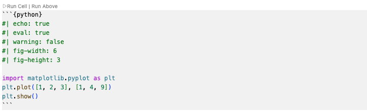

JSC 370: Data Science II
Week 1: Introduction
Course Details
Lectures: Mondays 1–3pm , MS 3278Wednesdays 1–3pm , HS 108
Meredith Franklin: meredith.franklin@utoronto.ca
TAs: Johnny Meng and Mandy Yao
My Background
In late 2021 moved from Los Angeles where I was an Assistant/Associate Professor of Biostatistics at University of Southern California
From Canada: McGill (BSc), Ottawa/Carleton Institute of Math (MSc), Harvard (PhD), UChicago (postdoc)
Here I’m an Associate Professor with tenure in the Department of Statistical Science (51%) and the School of the Environment (49%)
Data Science Concentration Lead for the MScAC
Executive committee for the U of T Data Science Institute
My Teaching
Founded a Master’s of Health Data Science program at USC that launched in 2020
Co-taught the introduction data science course
Taught graduate-level spatial statistics, inference, linear models
At U of T I teach STA465/STA2016/ENV1112 (Spatial Data Analysis) and I have also taught STA255 (Statistical Theory) and ENV1197 (Research Methods)
My Research
Spatial statistical methods for environmental data
Environmental epidemiology
Data science techniques for remote sensing data/imagery
Focus on pollution (air, noise) and climate (ghg, land cover change)
Machine learning/Deep learning for spatiotemporal data
Course Goals
Through this course, you will hone techniques used in data science. You will learn:
Programming in Python , and tools Markdown/Quarto , Git
Exploratory data analysis — generating hypotheses and building intuition
Data visualization — interpretable summaries
Data collection — APIs, data scraping, wrangling, cleaning
Statistical and machine learning algorithms
Building a github.io website with interaction to communicate your work
What is data science?
Data science is an exciting discipline that allows you to turn raw data into understanding, insight, and knowledge.
Source: https://r4ds.hadley.nz/
What do data scientists actually do?
Frame a question and define success (what would convince you?)
Acquire data (files, databases, APIs, scraping)
Clean + validate (units, missingness, duplicates, joins)
Explore (EDA) → iterate → refine hypotheses
Model + evaluate (prediction, inference, uncertainty)
Communicate results (reports, dashboards, reproducible code)
Data Scientists have great responsibility to communicate effectively
Source: https://xkcd.com/605/
Why communication matters in Data Science
Opaque models without uncertainty estimation or discussion of limitations
Biased or unrepresentative data may lead to biased predictions
Confounding \(\ne\) causation (EDA can sometimes mislead)
Overfitting and weak validation
Commentary on Data Science: Towards Data Science
Top Job Titles
Data Scientists in Demand
Demand for data science skills is high across many sectors.
Skills show up again and again:
Python + libraries (pandas, numpy, sklearn)
SQL + relational thinking (joins, grouping)
Visualization + storytelling (matplotlib/plotline/plotly)
Reproducibility (git, environments, reports)
Communication (clear write-ups, assumptions, limitations)
Global labor market outlook
World Economic Forum (Future of Jobs Report 2025) projects that by 2030 :
170 million roles created (across the labor market)92 million roles displacedNet +78 million jobs (~7% net growth)
These totals reflect all occupations (not just AI). Data/AI roles show up when we look at the fastest-growing job families . Source: World Economic Forum
Which jobs are growing fastest?
Fastest-growing roles (percentage terms) include:
Big Data Specialists AI and Machine Learning Specialists FinTech Engineers Software and Application Developers
The data behind the plot
Jobs created
170
Jobs displaced
92
Net change
78
Visualization of these data
What is this course?
This course is an introduction to the world of data science following on from where JSC270 left off.
We will focus on transferable skills and modern workflows:
Python + VS Code for computingQuarto for reproducible reports/slidesGit/GitHub for version control and collaboration
What you should expect
Weekly labs and bi-weekly homework using Python + Quarto
Submissions via GitHub Classroom (version control matters)
Focus on reproducibility: clean repos, clear reports, runnable code
Collaboration encouraged for discussion, but write-ups/code must be your own
Data Science Resources: Python
Python and VS Code
Python : general-purpose language widely used for data scienceVS Code : a lightweight, extensible editor with strong Python + notebook support
What is VS Code?
An editor for code, notebooks, and markdown
Works well with:
Python environments (conda/venv)
Jupyter notebooks
Connecting to remote environments (e.g. Digital Alliance Canada, AWS)
Git/GitHub
Quarto render/preview
VS Code: Things you’ll use every week
Select the correct Python environment
Integrated terminal (run quarto render, git, ssh)
Source control panel (stage/commit/push)
Quarto preview for slides/reports
VS Code: Layout
Quarto and Python and VS Code
Quarto : markdown-based publishing for reports, sites, and slides
How does Quarto work?
You write a single source file (.qmd) that mixes text , code , and output options (YAML + chunk options).
Quarto executes code (e.g., Python via Jupyter) and captures tables, figures, and printed output .
It renders the document through Pandoc into a chosen format (HTML report, reveal.js slides, PDF, Word, etc.).
The final output is a self-contained deliverable (e.g., report.html) that can be shared or published.
Generating reports with Quarto
A Quarto document is a plain-text file with extension .qmd
At the top is a YAML header that controls metadata and output (title, author, date, format, options).
The format field determines what Quarto produces:
html → a web report (.html)pdf → a PDF report (LaTeX installed)docx → a Word documentrevealjs → slides
Generating reports with Quarto
An example yaml header for an html report
--- title : "My Report" format : html ---
Rendering turns MyReport.qmd into MyReport.html (and supporting files if needed).
Core command: quarto render MyReport.qmd
Quarto code chunks
A code chunk might look like this:

Quarto code chunks
import matplotlib.pyplot as plt1 , 2 , 3 ], [1 , 4 , 9 ])
Quarto code chunks
Preamble (options):
echo: show/hide code
eval: run or skip
fig-width / fig-height: control plot size
Quarto Code chunks and options
Code:
import: libraries
.plot, .show: make figures and display them
GitHub
Version control is essential in industry and academia
Building a GitHub portfolio supports job hunting
You will build a github.io website as part of this course, with interactivity and app-type features
Git vs GitHub
Git : version control tool on your computerGitHub : hosting + collaboration (remote repos, PRs, issues)Workflow: edit → commit (git) → push (to GitHub)
This week: checklist
Install Python + VS Code + Quarto
Clone your GitHub Classroom repo
Render a .qmd locally
Commit + push your changes
Lab will be on your own this week, starting in person next week, January 14!
Next Week
Lecture: Monday January 12, 1–3pm (Version control)
Lab: Wednesday January 14, 1–3pm (VS Code, Python, Quarto, GitHub)